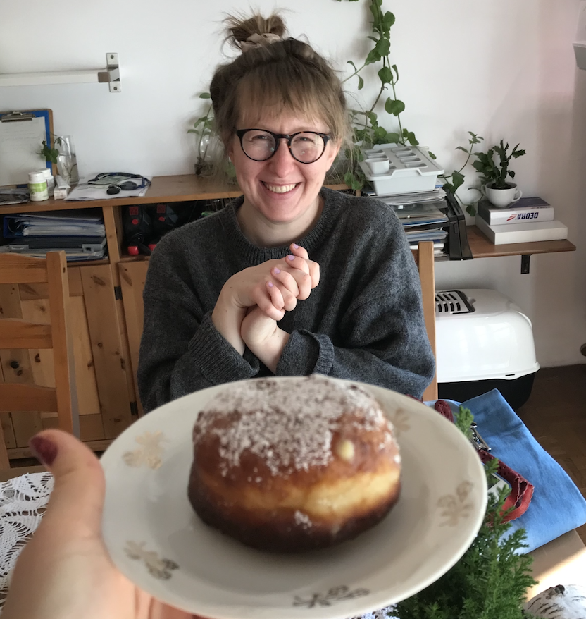

Marta Łoskot, MSc
Junior Frontend Developer (React & TypeScript)
Frontend Developer with an engineering background (MSc in Civil Engineering) and commercial internship experience. I build web applications using React, TypeScript, and modern JavaScript, with full-stack skills in Node.js and PostgreSQL.
I focus on component architecture, reusable UI, and building real products rather than just following tutorials. I use modern AI workflows daily for rapid prototyping, debugging, and clean code implementation.
👉 GitHub & Live Projects:
github.com/tusia313

Commercial Experience |
|
|---|---|
| 2024/02 – 2024/06 |
Modulo2dev | Katowice, PL Junior Frontend Developer Intern
|
| Full-Stack To-Do |
Task Management Web App (TypeScript & React)
Code on GitHub: github.com/tusia313 |
| Travel App |
Interactive Travel Application (React & Node.js)
Code on GitHub: github.com/tusia313 |
| 2026 – present |
Advanced React & TypeScript Training ui.dev – Deepening knowledge of state management, custom hooks, and modern React patterns. |
Previous Background |
|
|---|---|
| 2020/02 – 2021/10 |
Trakt sp. z o.o. sp. k. | Katowice, PL Assistant Road Designer – Engineering calculations, technical precision, project deadlines. |
| 2019/03 – 2019/12 |
Regional Roads Authority | Katowice, PL Administration Assistant – Documentation flow, cross-team communication, reporting. |
| Location | Katowice / Kraków area, Poland |
| loskotmarta@gmail.com | |
| Phone | (+48) 503 933 861 |
| GitHub | github.com/tusia313 |
Technical Skills
Frontend Core
- React (Hooks, Component Architecture, State)
- TypeScript & JavaScript (ES6+)
- Responsive Web Design (HTML5, CSS3, SCSS)
- Data Fetching & REST APIs (Async/Await, Fetch, Axios)
- Reusable UI Components
Backend & Data
- Node.js, Express.js
- PostgreSQL & SQL (CRUD queries)
- Auth: JWT, Session Cookies, Bcrypt
Tools & Practices
- Git, GitHub, npm, Vite
- Figma (Design-to-code workflow)
- Clean Code & Code Reviews
AI-Assisted Engineering
- LLMs (Claude, Gemini, Copilot) – rapid MVP prototyping, debugging, and workflow automation
Languages
- Polish: Native
- English: B2 (Professional working proficiency)
- Italian: A2 | French: A1
Education
2017 – 2018: MSc in Civil Engineering (Erasmus Scholar), University of Cassino, Italy
2017 – 2018: MSc in Civil Engineering, Silesian University of Technology, Poland
2014 – 2017: BSc in Civil Engineering, Silesian University of Technology, Poland
Additional Experience
2025: Web & Content Administrator (Freelance) – managing site updates, digital media, and UI content.
Summer 2018: Corporal / Non-Commissioned Officer, Polish Armed Forces
2016 – 2022: Volunteer at Community Center (Katowice) & Home and Peace Foundation (Jerusalem)